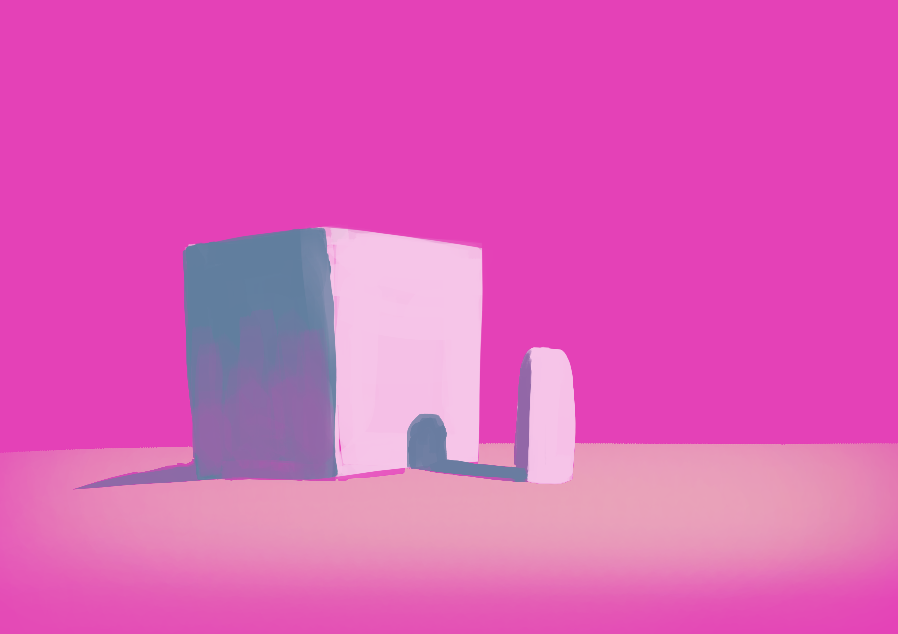
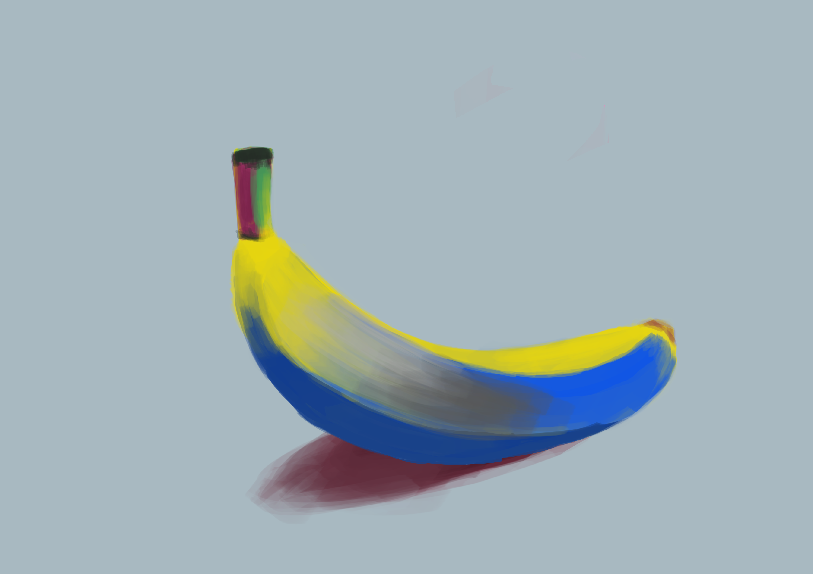

🟢 Gallery

📌 Oppløsningsswitch (density descriptors)
<img src="small.jpg" srcset="large.jpg 2x, small.jpg 1x" alt="...">

📌 Format fallback: WebP → JPEG
Nettleser velger WebP hvis støttet
Nettleser velger WebP hvis støttet
<picture><source type="image/webp" srcset="img.webp"><img src="img.jpg" alt="..." width="800" height="600"></picture>

📌 Lazy loading + dimensjoner
Forhindrer layout-shift (CLS)
Forhindrer layout-shift (CLS)
<img src="img.jpg" loading="lazy" decoding="async" width="800" height="500" alt="...">

📌 Enkel srcset med width descriptors
Nettleser velger basert på viewport
Nettleser velger basert på viewport
<img src="img-600.jpg" srcset="img-600.jpg 600w, img-1200.jpg 1200w" alt="..." width="600" height="400">